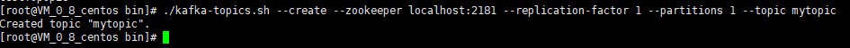
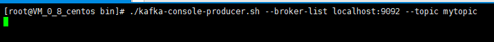
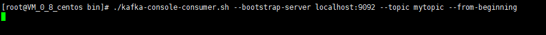
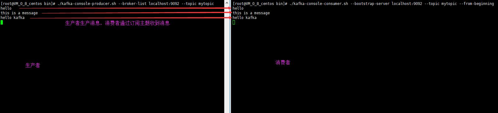

创建topic
执行命令创建名为mytopic的主题：bin/kafka-topics.sh --create --zookeeper localhost:2181 --replication-factor 1 --partitions 1 --topic mytopic

创建生产者
执行命令创建生产者：bin/kafka-console-producer.sh --broker-list localhost:9092 --topic mytopic

创建消费者
执行命令创建消费者：bin/kafka-console-consumer.sh --bootstrap-server localhost:9092 --topic mytopic --from-beginning

发送消息
